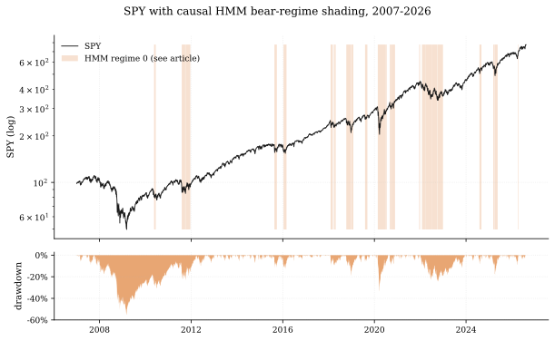
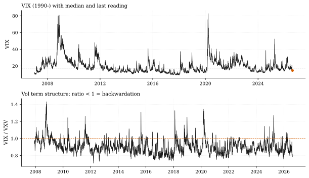
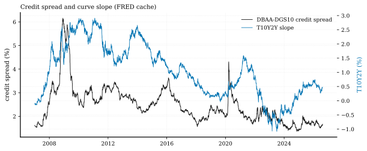
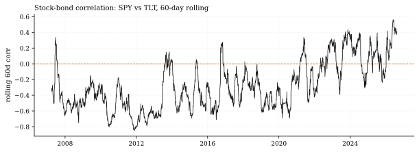
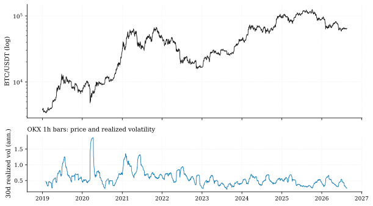
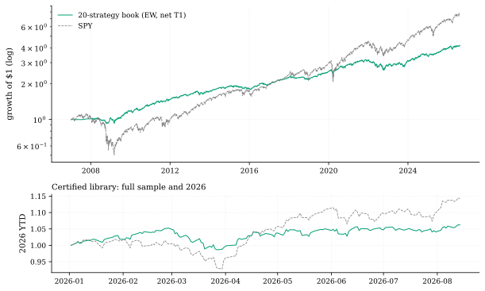

The one-paragraph version. As of August 19, 2026, our data says the US equity tape is in a textbook quiet-grind regime: SPY sits 0.20% below its August 13 all-time high, our causal HMM puts the probability of the turbulent regime at 0.06%, and the VIX term structure is at its 3rd percentile since 2007 — deep contango, zero fear. The two risks the tape is barely pricing at the margin: the 60-day stock–bond correlation is positive (+0.37) while 79% of all days since 2007 were negative, so the classic duration hedge is impaired; and risk appetite is bifurcated — Bitcoin is down 27.3% on the year (daily-close base; the Crypto Microscope note's −26.4% uses the Jan-1 00:00 UTC hourly base — same data, disclosed conventions), 48% below its October 2025 peak. Opportunities: our 20-strategy certified library is at its own equity high (YTD +6.2% net), and gold is bouncing (short-term p(up) = 0.88) while still below its 200-day mean. Everything below was computed by code from our own data — and one platform bug was caught and fixed along the way.
This is the first entry in a regular series. Research notes ship every 12 hours, each one editor-reviewed before publishing; every note is a live investigation — the data inventory, the external reading list, the code that produced every number, and the honest list of what we can't see.
How a pod data scientist works this problem
A hedge fund asks two questions of its data desk, over and over: where are we? and what would hurt us? Neither is answerable from a single chart. The process we demo below is the one our platform automates:
- Inventory the arsenal — what data do we actually hold, through what date, from what source? Stale or mis-scoped data is the most common silent killer.
- Read the outside world — news, central-bank statements, exchange announcements. External claims are labeled as claims and cross-checked against our own numbers where possible.
- Run the machines — regime models, vol gauges, credit and funding stress, strategy telemetry. All statistics come from code; prose interprets, never invents.
- Name the opportunities and the risks — with sizes, percentiles, and confidence bounds, not adjectives.
- Disclose the blind spots — every as-of date, every proxy, every gap.
Step 0 — the data audit (what we hold, honestly)
Before any opinion, the inventory. Everything in this article comes from six internal sources, each with its exact coverage:
| # | Source | Coverage | As-of | Notes |
|---|---|---|---|---|
| 1 | 16-ETF daily panel (SPY, QQQ, sector/country/bond ETFs) | 4,935 sessions, 2007-01-03 → | 2026-08-14 | The strategy-library universe |
| 2 | FRED rates/vol cache (DGS10, SOFR, DFF, VIX, VXV, DBAA, T10Y2Y…) | 26,588 rows, 1934 → | 2026-08-13 | Long-history percentiles live here |
| 3 | OKX 1h bars, 8 crypto pairs | 66,889 hourly bars per symbol, 2019-01-01 → | 2026-08-19 | Freshest thing we own |
| 4 | Perp funding cache (BTC, ETH, 8h) | 7,212 settlements, 2020-01-01 → | 2026-07-31 | 19 days stale — disclosed, not hidden |
| 5 | Certified library registry (20 strategies) | JSON metrics + correlation matrix | 2026-08-14 | Documented, frozen battery |
| 6 | Library net return streams (T1 frictions) | 4,934 sessions, 2007-01-04 → | 2026-08-14 | Net of realistic trading costs |
What we deliberately do not claim: we hold no earnings-call transcripts and no filings corpus in-house. Transcripts, statements and announcements enter through the external reading list below. Knowing the boundary of your own data is a feature, not an embarrassment.
The morning read (external sources, labeled as such)
- Reuters (Aug 13): S&P 500 notched a record close; "up about 14% in 2026, Nasdaq about 15%." Cross-check against our panel: SPY +14.24% YTD, QQQ +19.52% through Aug 14 — the S&P claim reproduces, the Nasdaq figure looks light against QQQ. External claims verified, quantified, and where they diverge, the divergence is measured.
- Federal Reserve (Jul 29 statement): funds rate held at 3.50%–3.75%, fifth consecutive hold, described as a divided vote. Reuters survey (Aug 17): economists expect holds through year-end with inflation above target.
- Federal Register / Nasdaq Trader: SEC-approved 23×5 trading goes live December 6, 2026 (overnight session 21:00–04:00 ET, one-hour pause). For daily-bar strategies this is a genuine regime break — more on that in the risk list.
- Seasonality context (external): August is historically a volatile month; several desks flag pullback risk into September's FOMC.
Sources with links are in the table at the end. Now the machines.
Exhibit A — Equities: the regime machine says "quiet grind"
We run a 2-state HMM on SPY daily returns + 21-day realized vol, refit on a strictly causal expanding window (quarterly refits, minimum 756 training sessions, states ordered so state 0 = lower fitted mean return). The states have clean economic identities:
| State | Ann. return | Ann. vol | Which episodes live here |
|---|---|---|---|
| 0 — turbulent | +3.4% | 30.2% | COVID crash (2020), the 2022 bear |
| 1 — quiet grind | +17.6% | 12.0% | 2024, and essentially all of 2026 |
Current reading: P(turbulent) = 0.06%. The model has spent 19.4% of days since 2010 in the turbulent state; this is not one of them. Price confirms: SPY is 0.20% off its August 13 record, and the worst drawdown of the past year was a modest −8.9%.
Breadth narrows the picture. 10 of our 16 panel ETFs (62.5%) trade above their 200-day means — every risk asset you'd expect (SPY, QQQ, IWM, XLF, XLP, EFA, EEM, DIA, VNQ, HYG). The six below the line are the defensive complex: all four bond ETFs (AGG, IEF, LQD, TLT), utilities (XLU) — and gold (GLD). A risk-on tape that has stopped paying the hedges.

Exhibit B — Volatility: the complacency gauge is pinned
- VIX 14.63 (Aug 14) — 29th percentile since 1990; the long-run median is 17.6.
- VIX/VXV ratio 0.786 — the 3rd percentile since 2007. That is deep contango: the market pays you to be short the calm. It has closed below 1.0 on 62 of the last 90 sessions.
- Realized vol: SPY 20-day realized is 13.4% annualized — dead-center 50th percentile since 2007.
- The variance risk premium is thin: implied minus realized is just 1.27 vol points. Selling volatility here is a low-carry trade — the insurance is cheap because few want it.
Low vol is not a prediction of anything (this gauge never forecasts; it prices). What it does say: positioning and hedges built for calm get hurt disproportionately when the 3rd-percentile reading mean-reverts.

Exhibit C — Rates and credit: benign, with one watch item
- Credit: Baa–10Y spread 1.67% — 18th percentile since 1986, tighter by 0.04pp over the year. No stress in corporate credit.
- Curve: 10Y–2Y at +0.48%, flattening mildly (−0.07pp y/y). Positively sloped, normal-looking.
- Funding stress: our SOFR–DFF z-score operand reads +0.03 — nothing. The 90-day max was 1.89σ and 2026 has seen a single day above 2σ. Repo plumbing is quiet (this is the gauge that screams first in funding episodes; it is whispering).

Exhibit D — The hedge that stopped working
The single most decision-relevant number in this piece: the 60-day rolling SPY–TLT correlation is +0.37.
Since 2007, 79.1% of days had a negative stock–bond correlation — that negative correlation is the entire free lunch of the 60/40 and of risk parity. In 2026 the correlation has ranged from −0.05 to +0.56 and now sits clearly positive. Readings like this mean duration is no longer damping equity risk; both legs are answering to the same rate/inflation driver. Hedging equity tail risk today means paying up for convexity (options) or finding genuinely uncorrelated book — not buying Treasuries and hoping.

Exhibit E — Crypto: the other half of risk appetite
Our freshest data is the OKX 1h book — it runs through today (Aug 19):
- BTC $64,613, −27.3% YTD, 48.2% below its October 6, 2025 peak of $124,673, below its 200-day mean, at a worst-2026 drawdown of −53%.
- 30-day realized vol: 25.6% annualized (from hourly returns) — elevated, unhedged-by-trend.
- Perp funding: 30-day mean +6.7% annualized (through Jul 31; cache staleness disclosed) — longs are paying, but not at crowded-long extremes.
Equities at records while crypto is in a bear of this depth is a bifurcation of risk appetite, not a uniform risk-on world. It matters for any book with crypto beta: our documented engine work (see docs/TOP_TIER_FEASIBILITY.md) found that on daily and 1h retail-reachable data, crypto edges repeatedly collapse into beta — the diversification case for the asset class here is weak exactly when equity vol is cheap.

Exhibit F — the certified library, in flight
The platform's 20-strategy library (each member individually passing a full net-of-cost battery, T1 frictions, 2007–2026) is not a backtest curiosity — we track its live net streams:
- Equal-weight book: full-sample net Sharpe 1.09, versus 0.66–0.95 for individual members. Diversification is doing real work.
- 2026 YTD: +6.2% net, sitting at its own equity high (current drawdown ≈ 0.0%); worst single day this year −1.83%.
- Honesty corner: mean pairwise correlation 0.50, max 0.755 — an effective N of 1.9 independent bets, not 20 on the library's own streams (the vitals engine's 3.09 effective-N reading measures the 16-ETF price universe, a different object — the Library Telemetry note in today's set reconciles the two). Best member YTD:
rsi_delta_zg+15.3%; worst:parkinson_zg−1.7% — 18 of 20 positive.
The market-vitals product adds the short-horizon overlay: strongest causal p(up) readings are gold 0.88, SPY 0.88, EFA 0.88; weakest TLT 0.39, LQD 0.49; EEM flagged "Watch." The rotation-null monitor fired no net alerts of consequence this cycle.

So what — opportunities
- Stay invested in the quiet regime, but re-price the hedges. The regime machine (99.94% quiet-grind) and the library (at highs, Sharpe 1.09 net) argue for staying long carry. The vol and correlation exhibits argue the insurance side of the book is mispriced: cheap VIX, positive stock-bond corr.
- Gold, tactically. Below the 200-day mean (level) but top of the vitals p(up) table (momentum) — a bounce-in-a-larger-consolidation setup, sized accordingly.
- Crypto only as priced beta, not alpha. −48% from the peak with 25.6% realized vol and modest funding: a de-risked, un-crowded complex — but our engine's documented result is that reachable edges there are beta. Treat it as an allocation decision, not a strategy.
So what — risks
- Complacency tail. Term structure at the 3rd percentile means markets are maximally un-hedged; the mean-reversion of that gauge is violent by construction. Cheap convexity is the trade against it.
- Hedge impairment. Positive stock–bond correlation (+0.37) invalidates the default 60/40 risk model until it turns; risk-parity-style books are running more equity risk than their formulas admit.
- The December 6 session break. 23×5 Nasdaq trading splits the day session into two liquidity regimes. Every daily-bar strategy in the library assumes one close per day; the assumption dies in 3.5 months. This is on our research calendar, pre-registered.
- Event calendar. September FOMC (hold expected per the Reuters survey), August/September seasonality, and an earnings tape at record multiples — the classic late-summer air pocket.
- Data risk, practiced not preached. Our funding cache is 19 days stale and we said so where it was used. Every number in this piece carries an as-of date; the two freshest claims in the market (Reuters' record close, our +14.24% YTD) were cross-checked against each other.
Machinery: how this piece was produced (and one bug it caught)
Every statistic above was computed by articles/2026-08-19-regime-radar/analysis.py (about a minute and a half, single run) into assets/numbers.json; the article quotes that file. The lineage block records all six inputs with row counts and date ranges. This is house law: statistics are pure code; the LLM that writes the prose never touches evaluation numbers.
The discipline paid for itself during this very piece. Our first HMM read claimed a 99.9% probability of the bear state — at all-time highs. Instead of writing "regime model confused," we checked: the expanding-refit loop was writing raw-state posteriors into columns documented as ordered-state posteriors (post_0 was not P(bear)). We fixed quantlab/methods/regime/base.py, added two regression tests with a deterministic stub model, and the reading flipped to the correct 0.06%. The article you just read contains a corrected number and a paper trail — that is the product.
Reproduce: the note's analysis.py regenerates every number and figure from house data in a single run — the desk re-runs it before each issue.
Limitations
ETF proxies, not futures or single names; panel as-of Aug 14 and FRED as-of Aug 13 (one session behind the equity panel); funding as-of Jul 31; the HMM is a 2-state descriptive model refit quarterly, not a forecast; library Sharpe is full-sample and already certified — YTD telemetry is monitoring, not a new claim; nothing here is investment advice.
Sources — external reading list
| Claim | Source |
|---|---|
| Record close, "up about 14% in 2026" | Reuters, Aug 13 2026 |
| Fed holds 3.50%–3.75%, divided vote | Federal Reserve statement, Jul 29 2026, CNBC |
| Economists expect holds through year-end | Reuters survey, Aug 17 2026 |
| FOMC calendar (no August meeting) | federalreserve.gov |
| 23-hour Nasdaq session, live Dec 6 2026 | Federal Register, Apr 15 2026, Nasdaq Trader announcements |
Internal sources: the six lineage rows in the data-audit table. All internal numbers are from assets/numbers.json, reproducible from the repository.
HMM regime model; macro operands ($vix; $vix_term; $credit_spread; funding stress); market vitals (EWQ); certified library telemetry; OKX 1h bars